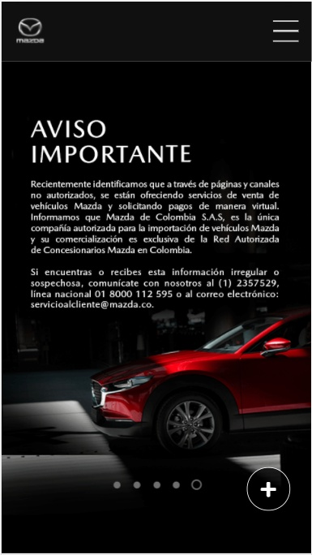
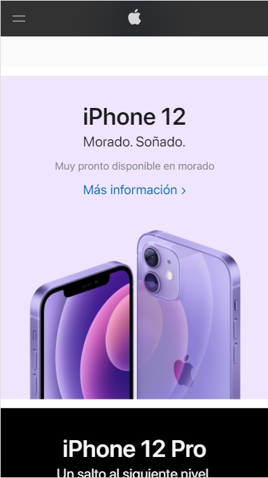

CONTRAST
Mazda
https://www.mazda.com.co/
Here we can easily observe the use of this principle. They are using the most important contrast we can use in a design. Black and white creates an easy but really effective effect in people's eyes. With a black backgroun the white text and the red car stick out.
RULE OF THIRDS
Apple
https://www.apple.com/co/
In this webpage, we can see the use oh the rule of thirds. It is clear in the picture to notice that the phones are not exactly in the middle of the page. This rule claims that aligning a subject with these points creates more tension, energy and interest in the composition than simply centering the subject.
REPETITION
UEFA
https://es.uefa.com/Taking into account that repetition is the reusing of the same or similar elements throughout the design. It is possible to realize that this webpage do not use different types of founts. They repeat the same type of fount for almost all the texts through out the whole page. They also reapeat the same colors, blue and white for almost every element in the page.